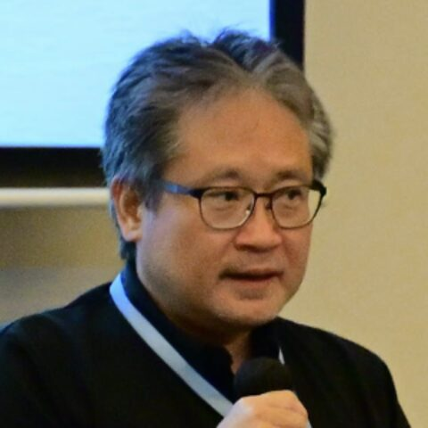

Toshiaki Katayama
DBCLS / BSI, NIG · Japan
Design & develop open source tools for knowledge graphs and genome graphs. TogoPackage and TogoMCP give AI agents access to local data and public life-science databases. Wants Japan to come together to design its new national bioscience database center.
Topics: Knowledge graphs, RDF/SPARQL, LLM/AI, Databases, Genomics
Codes in: Ruby, JavaScript, SPARQL